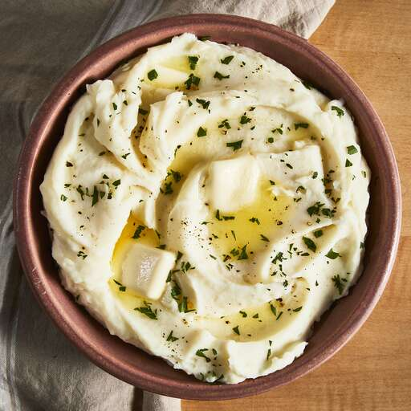

Home
Best Mashed Potatoes

Description
a comforting side dish of boiled or steamed potatoes broken down and mixed
with butter, milk, salt, and pepper for a creamy, smooth, or fluffy
texture, often served with gravy, meat, or vegetables, and can be
customized with additions like garlic, cheese, or herbs.
Ingrediants
- 2 pounds baking potatoes, peeled and quartered
- 3 cloves garlic, peeled, or to taste (Optional)
- 1 cup milk
- 2 tablespoons butter
- salt and ground black pepper to taste
Steps
-
Bring a large pot of salted water to a boil. Add potatoes and garlic,
lower heat to medium, and simmer until potatoes are tender, about 15
minutes.
-
When the potatoes are almost finished, heat milk and butter in a small
saucepan over low heat until butter is melted.
-
When the potatoes are almost finished, heat milk and butter in a small
saucepan over low heat until butter is melted.
-
Drain potatoes and return to the pot. Slowly add warm milk mixture,
blending it in with a potato masher or electric mixer until potatoes are
smooth and creamy.
-
Season with salt and pepper. Serve topped with extra butter and enjoy!